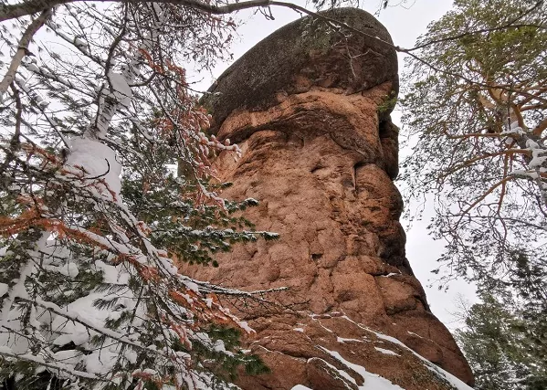
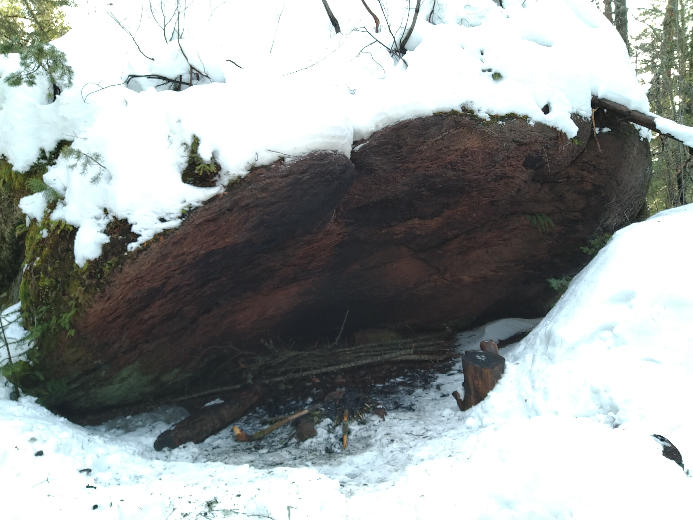
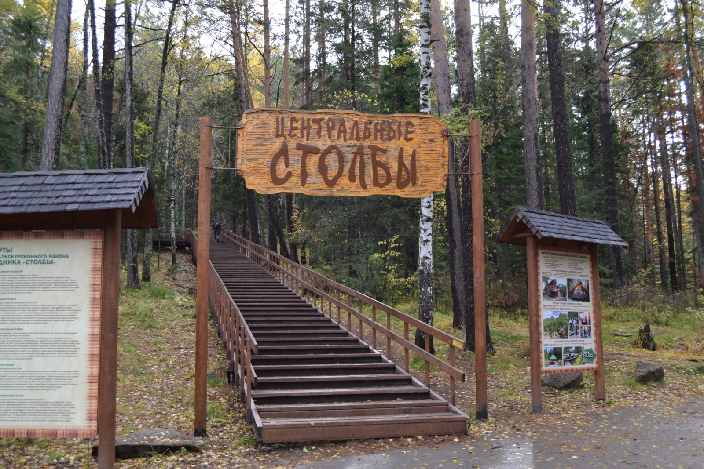

Новости
Поход на Мининские столбы
На предстоящие выходные 4-5 июня запланирован поход с ночевкой на Мининские столбы до скалы "Парус". Начало маршрута - село Минино, ж/д станция Караульная 04.06.2022 в 09:00. С собой брать палатки, спальные мешки, провиант и индивидуальную посуду. Посуду для приготовления еды обеспечивают организаторы.

Скала "Парус"

Укрытие для костра и стола - "Падающий камень" возле скалы "Парус"
Заповедник Красноярские столбы закрыт до 27 мая
В связи со сложной пожароопасной обстановкой заповедник Красноярские столбы закрыт для посетителей до 27.05.2022. Ссылка на источник.
